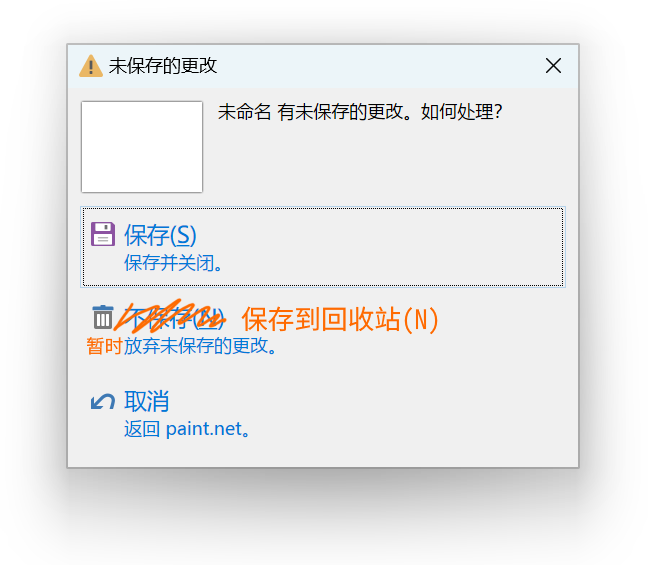
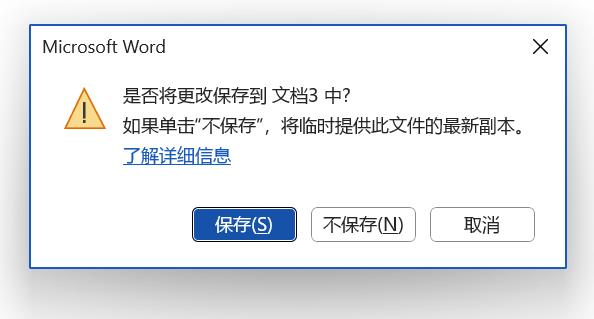

这是我在几年前就有的想法，最近又冒出来了：
Microsoft Word自2010版起实施了类似的措施，选择“不保存”仍会以一种神秘的格式（ASD）保存文档到一个C盘无人知晓的角落，随后可通过恢复未保存的文档找回。
现在，因为大力推广云端存储的缘故，默认不会显示这条迷惑文案。勾选选项 > 保存 > 使用键盘快捷方式打开或保存文件时不显示Backstage可以召回，即使用鼠标操作关闭文档也会显示旧文案。（啊？？）
我觉得直接保存到回收站比这种含糊不清意义不明的功能好114甚至514倍。传统的真正意义上的“不保存”太过危险，而Word的做法又不够直观，每个想要恢复未保存数据的用户必然只有查阅文档才知道点哪里恢复，更不用说想要清理使用痕迹的用户都不知道上哪儿删去。但保存到回收站就无此问题，能编辑文档的用户总会明白回收站的意义的。
回收站是个很有意义的文件夹，可惜Windows上没法直接打开其中的文件。一个替代方案是%TEMP%，但一般用户找不到这个地方。在Linux上我常在/tmp，因为它是tmpfs，不需要写回硬盘；也正是因为不写回硬盘，就能强迫自己在关机前把重要内容放到该放的地方，而不必花精力在持久化的目录中清理中间产物。我也把/tmp当作回收站来用，不用rm，而用mv到/tmp，不仅能减少误操作带来的损失，还抹平了rmdir和-r等不一致的界面。